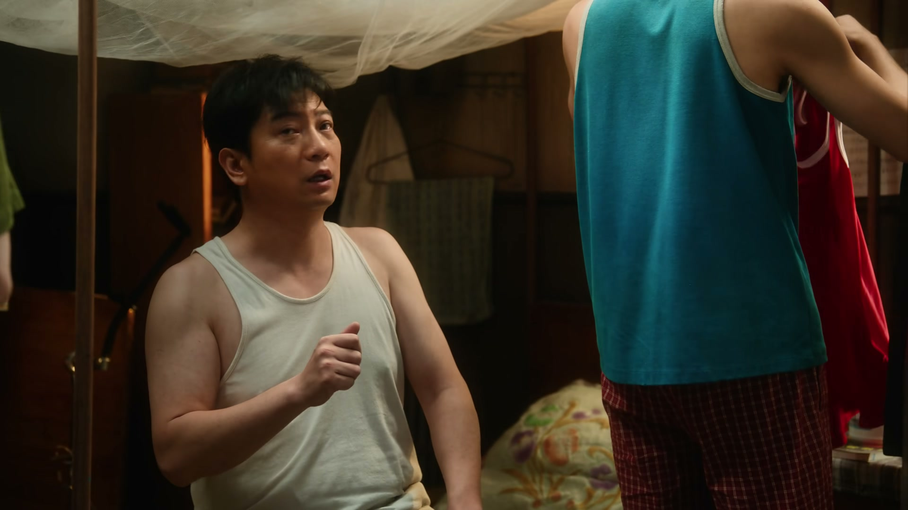
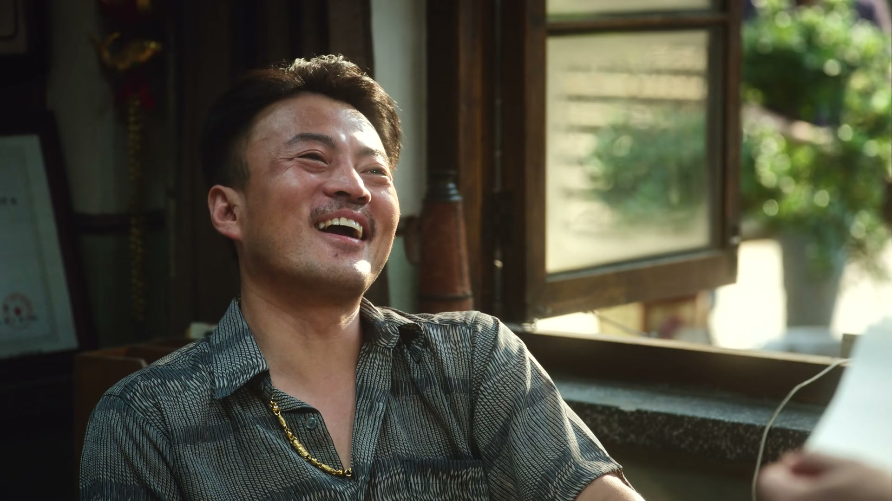

再诱人的价码，也买不动人心
情境：冯铁友一屋一天加二十，小东北还是不肯撵老客：「都像我的兄弟姐妹一样。」
遇到这种情况，可以这样做
- 把客人当家人，生意才做得长。
- 钱能买来床位，买不来人心。
- 拒绝要干脆，理由要真诚。
Drama Recap · 剧情图文总结
第 5 集 · 占山为王
施工队头子冯铁友开价「一屋一天加二十」要包下冬去春来，逼小东北把老客全撵走；徐胜利替他说情碰壁，又摆下酒席请王合长压阵，却被冯铁友一句「郑州的，不是宣武的」当场拆穿。夜里，他提着一箱酒，独自摸进了对方的地盘。
施工队头子冯铁友带着一帮人闯进冬去春来，开价「一屋一天加二十」，要把旅馆整个包下来给工人住。小东北不肯撵老客，被大老板一句「咱们是开旅馆挣钱的」压了下去。徐胜利替冯铁友向前妻陈燕说情碰壁，又摆下酒席请王合长压阵，却被一句「郑州的，不是宣武的」当场拆穿。夜里，他提着一箱酒，独自摸进了对方的地盘。
第 5 集，一伙施工队闯进冬去春来，挨屋量尺寸、点数床位：「每个屋子多大、多少张床、多少个桌子，都记清楚了！」小东北一句「谁让你们去了」把人拦住。领头的冯铁友说明来意：他在附近搞工程，要给兄弟们找个住处，看中了这间旅馆。小东北以「住满了」推脱，冯铁友一句「都撵出去呗」，把一屋子人全惹毛了。
剧里的鸡毛蒜皮，往往是人生的缩影。这些情节不只是故事——当你在现实中遇到同样的处境时，它们能提醒你：先做什么、别做什么、怎么说才有效。
情境：冯铁友一屋一天加二十，小东北还是不肯撵老客：「都像我的兄弟姐妹一样。」
情境：庄庄一句「不能一屁股坐在这儿占山为王」，让冯铁友改口「我也算你一个」。
情境：小东北求唐警官撑腰，唐警官把「生意归生意、出事找警察」分得清清楚楚。
情境：小东北心疼老客，大老板一句「咱们是开旅馆挣钱的」把他点醒。
情境：徐胜利没跟冯铁友谈判，先替他算账：加钱不划算、要打折、要打地铺。
情境：王合长一句「卧虎藏龙」差点翻盘，却被冯铁友一句「郑州的，不是宣武的」拆穿。
一大清早，一伙人闯进冬去春来，挨屋量尺寸、点数家具：「每个屋子多大、多少张床、多少个桌子，都记清楚了！」老板娘喊「赶紧干活去」，小东北冲上前拦住：「谁让你们去了？」
领头的人横他一眼，小东北不卑不亢地拱了拱手：「各位好汉，咱们往日无缘、近日无仇，今天你们来我这冬去春来，唱的是哪一出？这江湖上就没有过不去的梁子，没准都是误会。您说呢？」
对方首领往前一步，报上名号：「我跟你谈生意——我给你拉客来了。」话音未落，身后一群人的眼睛齐刷刷盯住了地下室。
关键台词 · KEY QUOTES
冯铁友摊牌：「我们在附近搞工程，得给兄弟们找个地儿，我就觉得你这个地儿好。我能把你那个地下室塞满了。」小东北摇头：「我这地下室现在基本都住满了。」冯铁友满不在乎：「住满了？没事，都撵出去呗。」
一屋子人脸色都变了。小东北一字一句地回绝：「这些人都不是普通的客人，都像我的兄弟姐妹一样。我不可能因为你加点钱，把他们都撵出去。加多少钱也不行。」冯铁友步步紧逼：「我一屋一天给你加二十。」
小东北掰着指头算：「咱一张床六块，他一个房间加二十，一张床都好几块——那我也不能一下把人都轰出去吧。」冯铁友得寸进尺：「那你就慢慢赶呗。你要赶得快，我一个屋再给你加十块。这钱，就看你能不能赚了。」
关键台词 · KEY QUOTES
陶亮亮拨开人群走出来：「等会儿，我聊聊。」冯铁友上下打量：「你是干吗的呀？这有你说话的份？」陶亮亮报上名号：「我吹萨克斯的，玩艺术的，被艺术玩的。」他环视四周：「我来冬去春来快小两年了。我把这儿当家，把这院的人当家人。」
曹野也接茬：「您喜欢画吗？您要是喜欢，我送你一幅画。等我一周成名，那我的画就价值连城。」冯铁友一句「你是个骗子」把他噎了回去。轮到庄庄开口，冯铁友的跟班笑她「还来个穆桂英」，庄庄不卑不亢：「冬去春来，谁住都行，但都得讲道理，不能一屁股坐在这儿占山为王了。」
对方恼了：「你是说我不讲道理？」庄庄一步不让：「别管我们是干什么的，只要我们交了房费，就没有道理把我们赶出去。」冯铁友反而笑了：「看着小姑娘这嘴多厉害，平时跟你们说多看点书……行，我也算你一个。」
关键台词 · KEY QUOTES

小东北私下来找唐警官求助：「唐哥，您得帮我。你看啊，人家要住你的店，让不让住是你的事；我不让住，他们非得住。」唐警官一针见血：「你们家大老板知道这事吗？」他撂下话：「跟你们家大老板商量商量，看看这买卖到底做还是不做。那帮人要是出了买卖以外的事，有其他行为，第一时间打电话，我们马上介入。」
回到屋里，众人商量对策。有人提起给「贤董」送的东西差点被抓了把柄，陶亮亮提醒：「人家都亮刀子了，咱们这会儿，都是站在刀尖上的。」小东北横下一条心：「啥也别说了，让板就板呗，赶紧找地方。要找你们找啊，我不搬。」
曹野望着冯铁友的背影，说了句「我看这姓冯的是个狠角色，识时务者为俊杰」，又回头看小东北——一屋子人，谁都没接话。
关键台词 · KEY QUOTES
冯铁友杀了个回马枪：「我刚才在兄弟们又转了一圈，这劲儿太适合咱们住了。」小东北软话求他：「铁哥，你不能天天拿我这儿当班上的，你给我们个喘气的机会。」冯铁友却盯着他：「你别怂啊，我喜欢你这个人。」
小东北诉苦：「我怎么撵呢？人家都付了房租了，我让人走，人家不走，我有啥招啊。」冯铁友给他「支招」：「你把他们都叫出来。你没招，我有招——我跟他们谈。」转身又吩咐跟班：「跟他们说，小东北要给他们发钱！」
老客们被叫到院里。冯铁友当场拍板：「让小东北把你们房费退了，再多给你们半个月房费，搬不搬？」有人犹豫，有人当场松口：「那行，我搬。」「我明天就搬。」一个下午，老客们陆续应了。「解决了，这不就解决了吗！」冯铁友拍拍手，让人「陪着他们回去把东西收拾一下」。
关键台词 · KEY QUOTES
老客一个个搬走，小东北心里不是滋味，端着酒去给大老板满上：「反正咱这冬去春来，你也是大老板，这次我是真没招了，您看怎么办吧。」大老板不以为意：「这有什么问题吗？房费不是多给了吗。」
大老板敲打他：「你要记住，咱们是开旅馆挣钱的。一间房一天多二十，一个月呢？一年多少钱，你算了。」小东北抹不开脸：「但你说这些老客吧，那都是我从火车站、长途汽车站一个一个请回来的，天天维系着，人家这才成了长客。这一下都撵走了，我这心里边不舒服。」
大老板不接话：「你呀，赶紧跟大家商量商量，这房间该推推该补补，赶紧把房子腾出来。」又补一句：「我叫你来当这个掌柜子，是让你帮我赚钱的，不是来讲哥们义气、称兄道弟、聊感情的。」小东北张了张嘴，一句话也说不出来。
关键台词 · KEY QUOTES
送走了老客，庄庄来问徐胜利：「徐老师，你收拾东西了吗？」徐胜利说不急，又忽然开口：「我今儿琢磨了一个事——你说那个冯铁友，真能按他说的付房钱吗？」
徐胜利掰着指头分析：「第一，虽然咱们这儿确实还不错，但也不是什么上档次的地方，他一天加二十，都能住正经的二人间了；第二，这么多人、这么大的买卖，换做是我，不得找你打个折？第三，这房钱上占不到便宜，就得在房子上占便宜了吧——上铺、下铺、打地铺，那我这儿当卧铺车厢了。」
庄庄听得一愣，徐胜利一拍大腿：「总之一句话，不见兔子不撒鹰。这人，心里早把账算好了。」
关键台词 · KEY QUOTES

徐胜利拎着家乡特产显字钢上门，替冯铁友向陈燕求情：「嫂子，冯铁友这次真的知道错了，你就见见他呗。他现在每天饭也不吃，觉也不睡。」陈燕一句「谁是你嫂子？早离婚了」把话顶了回去，又补一句：「赶紧给我滚，嫂子在这儿让我看到你，这辈子休想见我。」
另一边，冯铁友逼着小东北签合同，翻起旧账：「你之前不是说每个房间还加钱的吗？我把人都赶走了，你又要打折？」小东北打太极：「我说话算话吗？那就得看哥的心情了。」冯铁友冷笑：「我现在心情特别不好。房子我都包下来了，我买一车白菜，还有打折的道理？你赶紧签吧。」
小东北咬死了不松口：「这合同我做不了主。我管事归管事，但这个店不是我的。」冯铁友当场翻脸：「你不说你是冬去春来做主的吗？耍我？给你脸不要脸是吧！」两人几乎动手，小东北撂下话：「今天你动我一下，这事可就归警察管了，我也省心了。」
关键台词 · KEY QUOTES
徐胜利提着一袋显字钢来到白姐的服装店：「姐，还记得上回我给你拿的显字钢吗？你还有吗？有啊，我回头就给你送。」寒暄几句，他拐到正题：「我想问就那天，不是有个大胡子吗？姐跟那个男的熟吗？」
白姐脸色一沉：「不熟。」徐胜利不死心：「姐，我没打听。是这样，我和庄庄住那个小旅店，来了一帮施工队，非要住我们那儿，还要把之前的住客全赶走，完全不讲道理。这两天水、电全给断了，很多住客怕事都走了。我就想着姐要是认识那个大胡子，能不能帮说说话。」
白姐打断他：「我告诉你，这事他们是做得挺过分，我也知道你和庄庄都不容易，但是这事我管不着。再说了，北京大了去了。以后你们来做生意，咱们就谈生意；你非跟我提这人，咱们就当没认识过。」徐胜利走出店门，回头看了一眼招牌，叹了一句：「别人一走，茶就凉。」
关键台词 · KEY QUOTES
庄庄追上来问：「徐老师，您是怎么猜到他们一定会少给钱、一定会弄那上下铺的？」徐胜利答得玄：「这戏里哪个人物，你就要扮演哪个人物，你要顺着这个人物的逻辑去思考问题，这就叫设身处地。」庄庄打趣：「之前我真是小瞧你了。」
徐胜利下了决心：「这合同我还真就不签了，我看他能把我怎么着。他要敢动我，我就让唐哥给他们上课。」小东北提醒他：「那这梁子可就结下了，人有的是方法来折腾你。」徐胜利咬牙：「那怎么办？我明天就是火坑，我还往里跳啊？我可能还真有个办法。」
小东北把他拉到一边，压低声音：「你知道冯铁友来的时候，老郭为什么没出面吗？」徐胜利心里一动，小东北又说：「借一步说话，隔墙有耳。」他道出底牌——王合长是他爸从小带起来的世交，按辈分该叫一声王叔，「冬去春来的事，有招了」。
关键台词 · KEY QUOTES
饭馆里，徐胜利、小东北摆下酒席等王合长。小东北说王合长今天有个重要的会，可能会晚到一会儿。有人逗他：「你能不能把这小破地儿，还盘着大龙啊？」小东北不服：「这不是什么小破地儿！不是什么旅馆都能开在这地下。」
王合长姗姗来迟，徐胜利把他让到上座，一番寒暄，酒过三巡，连高尔夫都聊上了——「王合长，我听说现在领导干部都打高尔夫啊？」「一周打五次。」「上班归上班，打球归打球，中午休就打了。」冯铁友也坐在席间，频频举杯。
酒酣耳热，徐胜利给王合长递话：「王叔，你跟铁哥说一下，为什么不能把我小旅馆里头那些老客都撵出去。」王合长喝得脸色通红，一字一句：「这里住的年轻人，就是卧虎藏龙。谁都不许进去住，谁也不许抢。」冯铁友连声应下：「明白了，明白，全明白了。还得是你为我们做主啊。」
关键台词 · KEY QUOTES
散了席，冯铁友的脸色忽然冷下来：「饭也吃了，酒也喝了，单我买了，看戏我也看够了。我告诉你，我明儿就去你们那个小旅馆。你要不给我先合作，我就给你拆了。」他转向王合长：「你不是邻居吗？你哪儿来的？郑州的？不是宣武的！」——王合长「王叔」的身份，当场被揭穿。
一场戏散得灰头土脸。陶亮亮把几个人拉到角落，压着嗓子：「这事跟谁都别说，烂肚子里，太丢人了。这饭吃的……事办明没办明？」徐胜利一摊手：「不是，那事真办砸了。」
夜里，徐胜利提着一箱酒，一个人摸到冯铁友的地盘。对方认出他：「你小子挺有啊，你一个人就来找事，找错地方了吧？」徐胜利把酒放下。有人劝他：「能说的我都告诉你了。冯铁友这人是犯过错，但都是为了兄弟。拿着，我能帮你到这儿了。」临走，对方忽然问：「你跟陈燕什么关系？」「我叫她姐。」夜色里，徐胜利转身往回走，主题曲响起。
关键台词 · KEY QUOTES
用「设身处地」猜透冯铁友的盘算，替他说情两处碰壁，摆酒请王合长又被当场拆穿，最后独自提酒闯进对方地盘。
一句「不能一屁股坐在这儿占山为王」让冯铁友刮目相看，又追着徐胜利问「设身处地」的门道。
「我把这儿当家」挺身护店，散席后叮嘱众人「这事烂肚子里，太丢人了」。
一句「我送你一幅画，等我一周成名」被冯铁友叫「骗子」，又评他「是个狠角色，识时务者为俊杰」。
开价一屋一天加二十要包下冬去春来，软硬兼施逼小东北撵走老客；酒席上当场拆穿王合长的身份，放话「不合作就拆店」。
拦下闯店的施工队，被大老板一句「叫你当掌柜子是让你赚钱的」顶了回来；给徐胜利支招请王合长，事败后叮嘱保密。
一句「咱们是开旅馆挣钱的」定了调子，冯铁友来势汹汹时始终没露面，成了徐胜利计划里的一步棋。
给小东北支招找大老板商量，并承诺「出了买卖以外的事，我们马上介入」。
一句「谁是你嫂子，早离婚了」把替冯铁友说情的徐胜利挡在门外，带着孩子独自生活。
一句「这事我管不着」，一句「北京大了去了」，让徐胜利第一次尝到人情的凉薄。
在酒席上说出「这里的年轻人卧虎藏龙，谁也不许撵」，却被冯铁友当众揭穿身份。
庄庄一句「不能一屁股坐在这儿占山为王」，让满院的人都记住了这个小姑娘的胆气。
酒席上王合长的一句「这里的年轻人卧虎藏龙」，差点让冯铁友当场认输。
冯铁友当众拆穿「王叔」的身份，一场精心设计的酒席功亏一篑。
白姐一句「这事我管不着」，让徐胜利第一次尝到北京的人情冷暖。
徐胜利提着一箱酒独自走进冯铁友的地盘，一个人对着一群人。
冯铁友来势汹汹，冬去春来的真正老板始终没露面——他会在什么时候出手？
冯铁友的前妻陈燕带着孩子，徐胜利叫她「姐」，这条线又连着谁？
他口口声声「我喜欢你这个人」，到底是看中了旅馆，还是看中了人？
「你要不给我先合作，我就给你拆了。」冬去春来，还能撑过明天吗？